Memoria del proyecto
Diseño de una interfaz web y móvil para consultar, filtrar, guardar y reservar eventos culturales cercanos, con viaje en Metro incluido
Prototipo funcional en HTML · CSS · JavaScript
Dirección visual «Cartelera» · Mobile-first · WCAG 2.1 AA
Fernando Robledo Villanueva
HCI: Desarrollo web y móvil
Noviembre de 2026
github.com/Ferteleco/HCI---Trabajos-/tree/main/telon-hci-eventos-culturales
Telón es una aplicación para descubrir la oferta cultural cercana —conciertos, teatro, exposiciones, cine, danza y literatura— y decidir rápido a qué ir. La interfaz se ha diseñado para resolver cinco tareas: las cuatro del enunciado y una mejora propia, el viaje en Metro:
El criterio que ha guiado todas las decisiones es que una persona pueda responder a «¿qué hay, cuándo, dónde y cuánto cuesta?» sin abrir el detalle del evento, y que pueda hacerlo también con teclado o con un lector de pantalla.
Personas adultas que viven en una ciudad o la visitan y consumen cultura de forma ocasional o habitual. No se presupone experiencia técnica. Para concretar las decisiones se han usado dos perfiles:
| Perfil | Contexto y necesidades | Consecuencia en el diseño |
|---|---|---|
| Nerea, 27 años Planifica desde el móvil | Busca planes para el fin de semana en trayectos cortos, con una sola mano. Compara varios eventos y decide días después. | Diseño mobile-first con estética de cartelera, navegación inferior al alcance del pulgar, atajos de fecha («Este fin de semana»), lista personal. |
| Joaquín, 68 años Usa tableta y portátil | Tiene presbicia y acude con una acompañante en silla de ruedas. Desconfía de los iconos sin texto y de los formularios largos. | Texto de 16 px como mínimo, contraste alto, iconos siempre acompañados de texto, filtro «Accesible en silla de ruedas», áreas táctiles de 44 px o más. |
Se ha diseñado una aplicación web adaptable (responsive) que funciona en móvil, tableta y escritorio con un único código. El móvil es el dispositivo principal porque la consulta de planes suele hacerse fuera de casa; el escritorio aprovecha el ancho para mostrar los filtros de forma permanente junto al listado.
| Principio | Cómo se aplica en Telón |
|---|---|
| Coherencia visual | Un único sistema de componentes: la misma tarjeta de evento en el listado, el mismo marcador para guardar en todas las pantallas, botones primarios siempre en verde esmeralda y secundarios con borde. Cada categoría mantiene su color de cartel y su icono en listado, detalle y lista personal. |
| Jerarquía | Un solo h1 por pantalla; títulos en una tipografía de cartel condensada y en mayúsculas, y datos en palo seco. En cada cartel el día del mes es el elemento más grande, seguido del título, el lugar y el precio. |
| Claridad | Etiquetas con verbos concretos («Reservar entradas», «Quitar de la lista», «Ver 12 eventos»). Las fechas próximas se expresan como «Hoy» o «Mañana». El precio «Gratis» se destaca con una etiqueta propia. |
| Espacio en blanco | Retícula de 16 px entre tarjetas y márgenes laterales de 16 px en móvil y 24 px en escritorio. Los bloques se separan con espacio y con un cambio de tono del fondo, sin líneas ni sombras. |
| Navegación clara y consistente | Tres destinos fijos —Inicio, Buscar, Mi lista— siempre visibles: barra inferior en móvil y cabecera en escritorio. El destino activo se indica con un bloque de color relleno y el atributo aria-current. Las pantallas secundarias tienen un enlace «Volver al listado». |
| Retroalimentación | Cada acción produce una respuesta inmediata: el marcador cambia de estado, el número de resultados se actualiza al tocar un filtro y un aviso breve confirma «Guardado en tu lista» o «Reserva confirmada». |
| Prevención de errores | El contador de entradas limita el valor entre 1 y 6; si un filtro deja el listado vacío se explica el motivo y se ofrece «Borrar filtros»; la reserva pide confirmación en un diálogo con el total a la vista. |
| Criterio WCAG 2.1 | Aplicación en el prototipo |
|---|---|
| 1.1.1 Contenido no textual | Los iconos y las fotografías de los carteles son decorativos (aria-hidden o alt=""), porque junto a cada una está el título del evento; los botones de solo icono tienen nombre accesible («Guardar «Noches de jazz…» en mi lista»). El código QR del billete de Metro se expone como imagen con descripción y con su código de respaldo en texto. |
| 1.3.1 Información y relaciones | HTML semántico: header, nav, main, article, listas, fieldset/legend en los grupos de filtros, dl para los datos del evento y time para las fechas. |
| 1.4.1 Uso del color | El color nunca es el único indicador: la categoría se escribe con texto, el filtro activo añade una marca «✓» y el estado guardado cambia el relleno del icono y el texto del botón. |
| 1.4.3 Contraste (mínimo) | Todo el texto sobre fondos planos supera 4,5:1 y casi todo supera 7:1, también sobre los carteles de color (tabla de la sección 4.3). Sobre las fotografías el texto blanco se apoya en un velo oscuro; ese caso no se ha medido numéricamente y queda como pendiente (sección 5.3). |
| 1.4.4 y 1.4.10 Cambio de tamaño y reajuste | Tamaños en rem y maquetación fluida: el contenido se reorganiza en una columna sin desplazamiento horizontal a 320 px de ancho. |
| 1.4.11 Contraste no textual | Bordes de campos, casillas y botones con contraste ≥ 3:1 (5,54:1 sobre los paneles). Las casillas y los botones de opción se han dibujado a medida porque los nativos del tema oscuro no llegaban a 3:1. |
| 2.1.1 Teclado | Todas las funciones se realizan con elementos nativos (a, button, input, select, dialog), por lo que funcionan con Tab, Intro, Espacio, flechas y Escape sin código adicional. |
| 2.4.1 Evitar bloques | Enlace «Saltar al contenido principal» como primer elemento enfocable. |
| 2.4.2 y 2.4.6 Títulos y etiquetas | El título de la página cambia en cada pantalla («Mi lista · Telón»); encabezados descriptivos y jerárquicos. |
| 2.4.3 Orden del foco | Al cambiar de pantalla el foco se lleva al h1; al cerrar el diálogo vuelve a la zona de acciones; al quitar un elemento de la lista pasa al encabezado de su sección. |
| 2.4.7 Foco visible | Anillo de dos tonos: contorno blanco de 3 px con halo negro. Se distingue sobre el fondo oscuro (19,2:1) y sobre cualquier cartel, sea claro u oscuro. |
| 2.5.5 Tamaño del objetivo (AAA) | Todos los controles miden al menos 44 × 44 px; los botones principales, 52 px de alto. |
| 3.1.1 Idioma | lang="es" en el documento. |
| 3.3.2 Etiquetas o instrucciones | Todos los campos tienen una label visible asociada; el texto de ejemplo (placeholder) solo complementa. |
| 4.1.2 Nombre, función, valor | Botones conmutables con aria-pressed; navegación con aria-current="page"; diálogo nativo con aria-labelledby. |
| 4.1.3 Mensajes de estado | El recuento de resultados y los avisos de confirmación usan role="status", de modo que el lector de pantalla los anuncia sin mover el foco. |
Además se respetan dos preferencias del sistema: prefers-reduced-motion (se desactivan todas las animaciones de entrada y los desplazamientos) y el modo de contraste forzado de Windows (los estados activos se refuerzan con el borde, no solo con el fondo).
En lugar de un mockup estático se ha construido un prototipo funcional en HTML, CSS y JavaScript, sin bibliotecas externas. Así se puede comprobar de verdad lo que un mockup solo simula: el comportamiento adaptable, la navegación por teclado y los mensajes para lectores de pantalla. Para abrirlo basta con hacer doble clic en prototipo/index.html; funciona sin conexión.
Enlace al prototipo: https://ferteleco.github.io/HCI---Trabajos-/telon-hci-eventos-culturales/ (código: https://github.com/Ferteleco/HCI---Trabajos-/tree/main/telon-hci-eventos-culturales). Se entrega también como carpeta del prototipo junto a este documento. Los eventos, los recintos y la usuaria «Nerea Ibarra» son datos ficticios de ejemplo.
Inicio, Buscar y Mi lista son accesibles desde cualquier pantalla mediante la navegación principal. Al detalle se llega desde cualquier tarjeta o desde la lista personal; la reserva se abre como diálogo sobre el detalle para no perder el contexto.
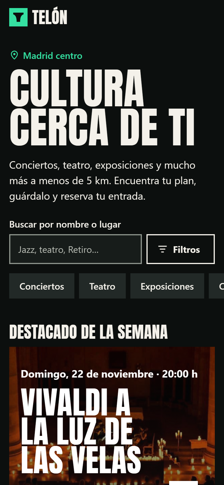
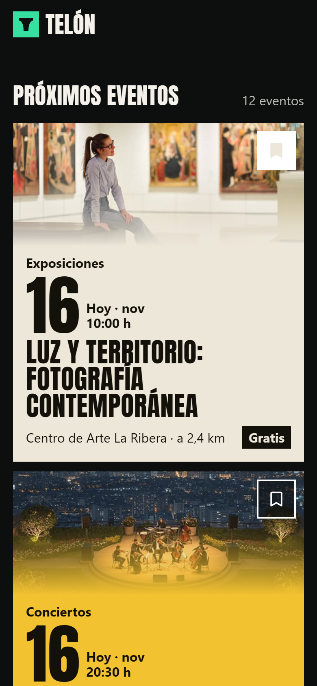
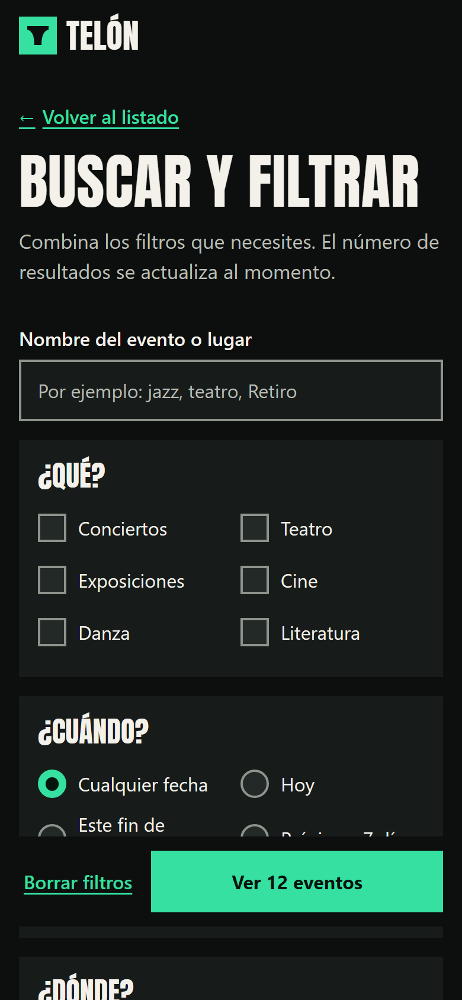
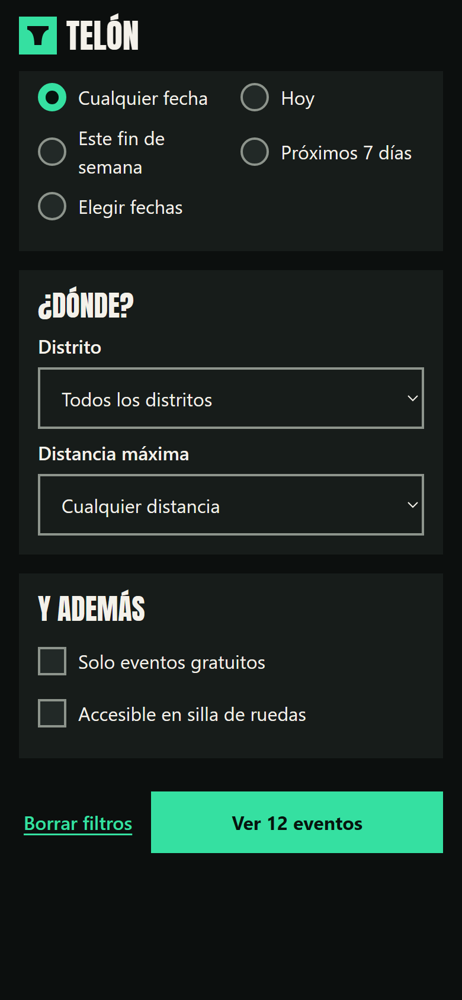
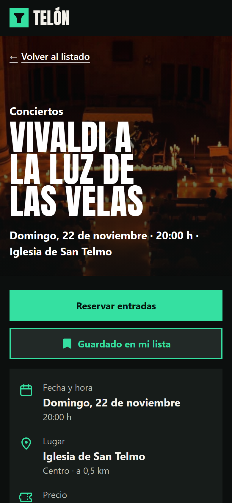
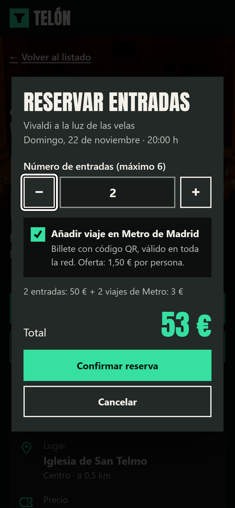
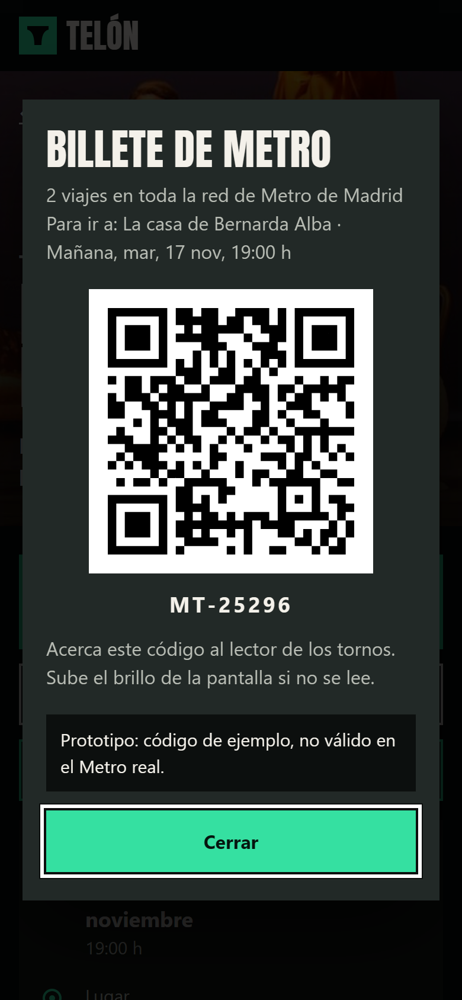
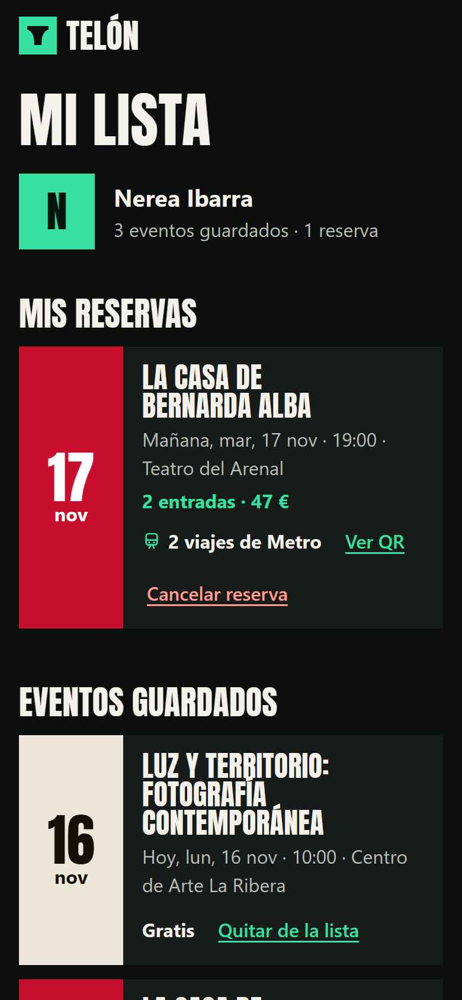
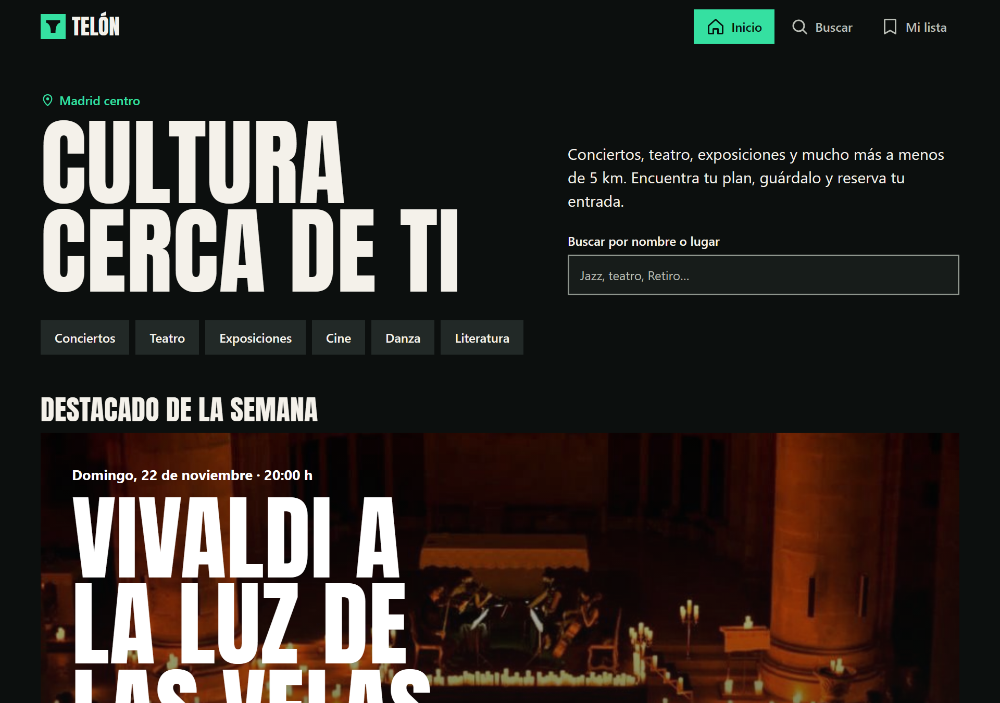
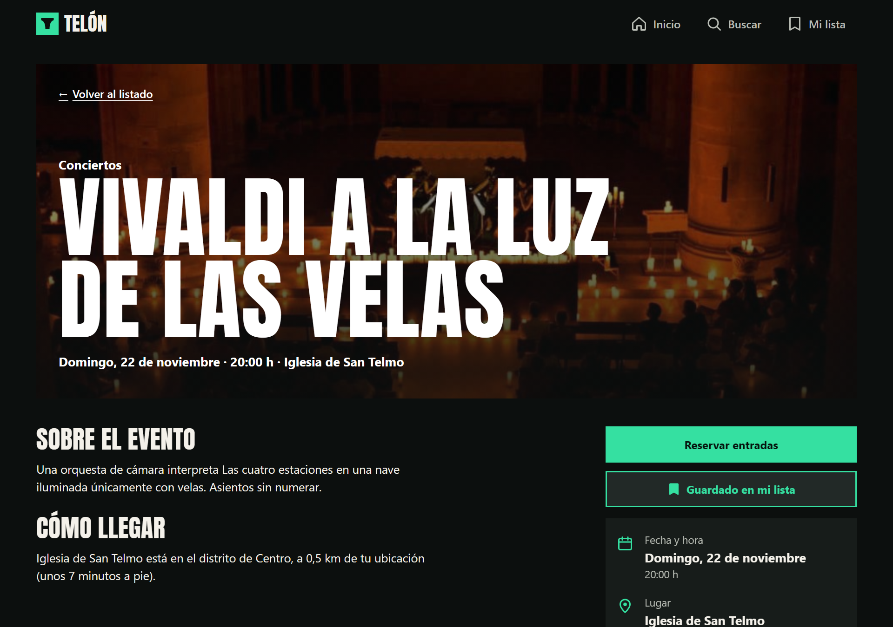
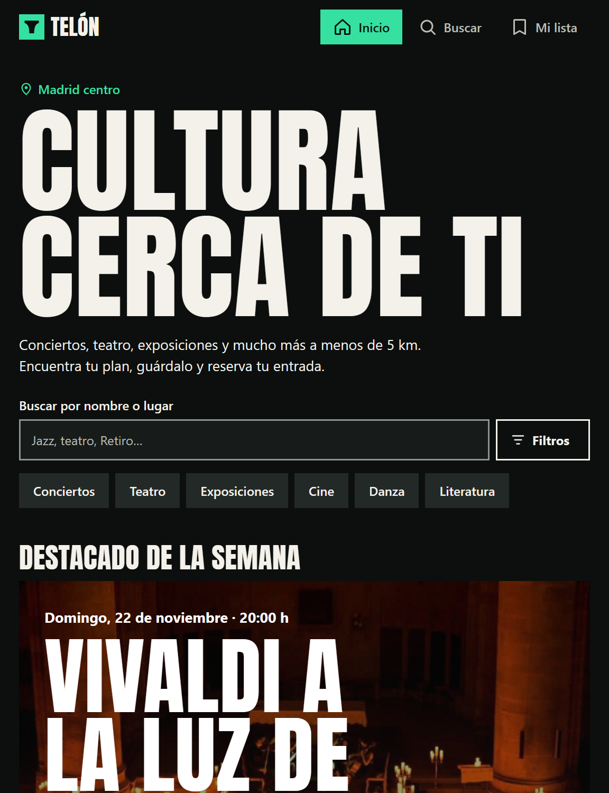
La primera versión del prototipo, clara y con tarjetas convencionales, era correcta pero resultaba poco atractiva para un producto cultural. En una segunda iteración se rehízo el aspecto visual a partir de una idea: cada evento es un cartel, y la aplicación es la cartelera pegada en la pared de una sala a oscuras. Se tomaron como guía dos webs reales:
No se ha copiado ningún elemento gráfico, texto ni imagen de esas webs: solo se han usado como referencia de tono y de organización.
En una tercera iteración se añadió fotografía a cada cartel: el color plano de la categoría se mantiene como base y la foto se funde con él mediante un velo, de modo que el listado conserva su coherencia cromática aunque las imágenes sean muy distintas. La fotografía vuelve reconocible cada evento, pero el color, el día en grande y el título siguen siendo lo que ordena la lectura.
rem y ningún texto baja de 13 px. Las mayúsculas se aplican con CSS, de modo que los lectores de pantalla leen los títulos con normalidad.La paleta tiene tres papeles claros. El fondo casi negro representa la sala a oscuras y hace que los carteles destaquen. El verde esmeralda es la «luz de foco»: se reserva a lo interactivo (enlaces, botón principal, destino activo, confirmaciones), de manera que todo lo verde se puede pulsar. Y cada categoría tiene un color plano de cartel —amarillo, rojo, hueso, azul, naranja y verde— que se usa en su cartel, en su filtro activo y en su entrada de la lista, siempre junto al nombre escrito. Las superficies se separan con un escalón de tono, sin sombras. El único degradado es el velo oscuro que se coloca bajo el texto cuando hay una fotografía.
Las ratios de contraste se han calculado con la fórmula de luminancia relativa de WCAG 2.1:
| Uso | Primer plano | Fondo | Ratio | Mínimo AA |
|---|---|---|---|---|
| Texto principal | #F4F1EA | #0C0F0E | 17,07:1 | 4,5:1 |
| Texto principal en paneles | #F4F1EA | #171C1A | 15,29:1 | 4,5:1 |
| Texto secundario | #B9BDB5 | #0C0F0E | 10,10:1 | 4,5:1 |
| Texto secundario en paneles | #B9BDB5 | #171C1A | 9,04:1 | 4,5:1 |
| Enlaces y acento | #35E0A1 | #0C0F0E | 11,31:1 | 4,5:1 |
| Botón primario y navegación activa | #06140E | #35E0A1 | 11,07:1 | 4,5:1 |
| Acción destructiva | #FF9C8F | #171C1A | 8,55:1 | 4,5:1 |
| Cartel de conciertos | #14110A | #F2C230 | 11,25:1 | 4,5:1 |
| Cartel de teatro | #FFFFFF | #C8102E | 5,88:1 | 4,5:1 |
| Cartel de exposiciones | #14110A | #EDE7DA | 15,30:1 | 4,5:1 |
| Cartel de cine | #FFFFFF | #2247E6 | 6,75:1 | 4,5:1 |
| Cartel de danza | #14110A | #FF7A3D | 7,27:1 | 4,5:1 |
| Cartel de literatura | #06140E | #35E0A1 | 11,07:1 | 4,5:1 |
| Borde de campos y casillas | #8D948C | #171C1A | 5,54:1 | 3:1 |
| Indicador de foco | #FFFFFF | #0C0F0E | 19,2:1 | 3:1 |
Cuando un cartel lleva fotografía se oculta el icono ampliado de la categoría, porque la imagen ya identifica el evento y el icono ensuciaba la foto.
prefers-reduced-motion.El último obstáculo entre «quiero ir» y «estoy allí» es llegar. Por eso, al reservar se ofrece añadir un viaje en Metro de Madrid con billete QR, con una oferta de 1,50 € por persona para toda la red. Las decisiones de diseño son estas:
La hoja de estilos se ha escrito mobile-first: los estilos base son los del móvil y cada punto de ruptura añade solo lo que cambia.
| Ancho | Navegación | Listado | Filtros | Detalle |
|---|---|---|---|---|
| Móvil < 600 px | Barra inferior fija con icono y texto | 1 columna de carteles; categorías con desplazamiento horizontal | Pantalla propia con botón de resultados fijo | 1 columna: cartel, acciones, ficha y descripción |
| Tableta 600–959 px | Desde 768 px, en la cabecera | 2 columnas; categorías en varias líneas | Pantalla propia | Desde 768 px, 2 columnas |
| Escritorio ≥ 960 px | En la cabecera | 2 columnas, y 3 desde 1180 px; el titular y el buscador comparten fila | Panel lateral permanente; el botón «Filtros» desaparece | Descripción a la izquierda; acciones y ficha en un lateral fijo al desplazar |
El contenido tiene un ancho máximo de 1240 px para mantener líneas de lectura cómodas en monitores grandes. No se oculta ninguna función en ningún tamaño: solo cambia su colocación.
Se ha seguido un proceso iterativo e incremental, en ciclos cortos de «diseñar → construir → revisar → corregir», trabajando directamente sobre el prototipo en código en lugar de pasar por una herramienta de maquetas. Ha habido cuatro iteraciones:
Cada iteración terminó con una revisión en el navegador en móvil y escritorio, y los problemas detectados alimentaron la siguiente.
| Problema | Solución adoptada |
|---|---|
| La primera versión era correcta pero «sosa»: tarjetas blancas iguales, sin personalidad. | Segunda iteración visual con un concepto propio (cada evento es un cartel), fondo oscuro, colores planos por categoría y tipografía de cartel. |
| Con el tema oscuro, las casillas y los botones de opción nativos apenas se distinguían del fondo (menos de 3:1). | Se dibujaron a medida con borde de 2 px a 5,54:1 y relleno verde con marca al activarse, manteniendo los elementos input nativos para no perder el manejo por teclado. |
| El indicador de foco oscuro era invisible sobre el fondo negro, y uno claro lo era sobre el cartel de exposiciones. | Anillo de dos tonos (blanco con halo negro), que siempre contrasta con uno de los dos. |
| Al mover el prototipo a otra carpeta se olvidó copiar la carpeta de la tipografía: el titular volvía a verse en Arial y perdía el aspecto de cartel. | Se detectó comprobando en el navegador que la fuente aparecía como «error», se copió la carpeta fuentes/ y se incluyó en el archivo comprimido de entrega. |
| Al añadir fotografías, el icono ampliado de la categoría se superponía a la imagen y, en el detalle, al título. | Con fotografía se oculta ese icono: la imagen ya identifica el evento. |
| El marcador de guardar podía perderse sobre fotografías claras u oscuras. | Fondo semitransparente oscuro con borde blanco; al activarse se rellena de blanco. |
| El texto sobre una fotografía no tiene un contraste predecible. | Velo oscuro bajo el texto en el destacado y la cabecera, y fundido al color de la categoría en las tarjetas. Falta medirlo numéricamente (sección 5.3). |
| Un código QR se puede generar en el servidor o con un servicio externo, pero eso obligaría a enviar datos fuera y a depender de la red. | Se usa una biblioteca pequeña de código abierto que genera el QR en el navegador y se entrega junto al prototipo. |
| Un complemento de pago preseleccionado puede cobrarse sin que el usuario lo advierta. | La casilla del viaje en Metro empieza desmarcada y el desglose del total se actualiza al marcarla. |
| Al quitar un evento de la lista, el botón pulsado desaparecía y el foco del teclado se perdía. | El foco se mueve al encabezado de la sección afectada y un mensaje de estado confirma lo ocurrido. |
| Las animaciones de entrada podían molestar a personas sensibles al movimiento. | Solo se animan opacidad y posición, y con prefers-reduced-motion se desactivan por completo. |
El prototipo se ha revisado calculando los contrastes de color, usando elementos HTML nativos con sus nombres y estados, y comprobando visualmente las pantallas en tres anchos y el flujo de reserva con Metro de principio a fin (total, confirmación, billete y lista). Quedan pendientes y se reconocen como limitación:
Aprendizajes. La accesibilidad resulta mucho más barata cuando se decide al principio: calcular el contraste antes de elegir la paleta y usar elementos nativos evita casi todo el trabajo de corrección. Prototipar en código saca a la luz problemas que una maqueta esconde, como la pérdida del foco, un recurso que no se copia o un icono que se superpone a una foto. Separar estructura y presentación permitió cambiar por completo el aspecto sin rehacer la lógica. Y una función pequeña bien integrada, como el viaje en Metro, mejora el flujo más que muchas pantallas nuevas.
Posibles mejoras.
prefers-color-scheme, recalculando los contrastes.Las fotografías de los carteles deben proceder de fuentes con licencia que permita su uso, y cada una debe acreditarse. Esta tabla debe completarse antes de entregar el trabajo con el autor, la licencia y el enlace de cada imagen. Los huecos están marcados en amarillo.
| N.º | Evento (archivo) | Autor y fuente | Licencia |
|---|---|---|---|
| 1 | Noches de jazz en la azotea (e1.jpg) | [autor · fuente · enlace] | [licencia] |
| 2 | La casa de Bernarda Alba (e2.jpg) | [autor · fuente · enlace] | [licencia] |
| 3 | Luz y territorio (e3.jpg) | [autor · fuente · enlace] | [licencia] |
| 4 | Cine mudo con piano en directo (e4.jpg) | [autor · fuente · enlace] | [licencia] |
| 5 | Flamenco joven (e5.jpg) | [autor · fuente · enlace] | [licencia] |
| 6 | Club de lectura (e6.jpg) | [autor · fuente · enlace] | [licencia] |
| 7 | Vivaldi a la luz de las velas (e7.jpg) | [autor · fuente · enlace] | [licencia] |
| 8 | Microteatro (e8.jpg) | [autor · fuente · enlace] | [licencia] |
| 9 | Cerámica viva (e9.jpg) | [autor · fuente · enlace] | [licencia] |
| 10 | Poesía en el parque (e10.jpg) | [autor · fuente · enlace] | [licencia] |
| 11 | Cuerpos en tránsito (e11.jpg) | [autor · fuente · enlace] | [licencia] |
| 12 | Indie al aire libre (e12.jpg) | [autor · fuente · enlace] | [licencia] |
El resultado es un prototipo navegable que cubre los cuatro objetivos del enunciado —consultar, filtrar, guardar y reservar— en las cuatro pantallas clave exigidas más un diálogo de reserva, y que se adapta a móvil, tableta y escritorio. Tras una segunda iteración visual tiene además una identidad propia, la de una cartelera con fotografía, y una mejora propia: el viaje en Metro con billete QR. Las decisiones de tipografía, color y disposición están ligadas a los perfiles de usuario y a criterios WCAG 2.1 concretos, con el contraste comprobado numéricamente.
| Requisito | Estado | Dónde se recoge |
|---|---|---|
| Descripción inicial: objetivo, público y dispositivos | Cumplido | Sección 1 |
| Principios de usabilidad | Cumplido | Sección 2.1 |
| Criterios básicos de accesibilidad WCAG | Cumplido, con verificación parcial | Secciones 2.2 y 4.3. Falta la comprobación con WAVE, axe y lector de pantalla, y el contraste sobre fotografías (5.3) |
| Prototipo de al menos 4 pantallas clave | Cumplido | Sección 3: inicio, filtros, detalle y lista personal, más el diálogo de reserva |
| Consultar, filtrar por categoría, fecha y ubicación, y guardar en lista personal | Cumplido | Funcional en el prototipo |
| Inscripción o reserva de entradas (opcional) | Cumplido | Diálogo de reserva; sin pago real |
| Mejora propia: viaje en Metro con billete QR | Cumplido | Sección 4.4 y figura 2. Código de ejemplo, no válido en el Metro real |
| Créditos y licencias de las fotografías | Pendiente | Sección 5.5, por completar |
| Justificación tipográfica, cromática y de disposición | Cumplido | Secciones 4.1 a 4.4 |
| Versión responsive | Cumplido | Sección 4.5 y figuras 3 y 4 |
| Metodología, problemas y reflexión | Cumplido | Sección 5 |
| Código HTML/CSS/JS (opcional) | Cumplido | Carpeta del prototipo y anexo A |
Puntos fuertes. Prototipo real y no simulado; accesibilidad integrada desde la estructura; identidad visual propia basada en un concepto (la cartelera); contraste muy por encima del mínimo; ninguna función se pierde al cambiar de dispositivo.
Puntos débiles. No ha habido pruebas con usuarios ni con productos de apoyo; los datos son ficticios; el listado no ofrece vista de mapa ni ordenación, la ubicación del usuario está fijada en el prototipo y las licencias de las fotografías están por documentar.
El código completo se entrega en la carpeta del prototipo. No necesita servidor ni conexión.
| Archivo | Contenido |
|---|---|
index.html | Estructura fija de la página: enlace de salto, cabecera con la navegación, región main, zona de avisos y elemento dialog. |
estilos.css | Variables de diseño, estilos base para móvil, animaciones y puntos de ruptura a 600, 768, 960 y 1180 px. Preferencias de movimiento reducido y contraste forzado. |
fuentes/ | Tipografía Anton en formato WOFF2 y su licencia (SIL Open Font License). |
img/ | Doce fotografías de los eventos en formato JPEG, de 960 × 600 px. |
libs/ | Biblioteca qrcode-generator (licencia MIT) para generar el código QR del billete de Metro, y su licencia. |
app.js | Datos de ejemplo, filtrado, las cuatro vistas, enrutado por hash, gestión del foco y guardado de la lista y las reservas en localStorage, oferta de Metro y billete QR. |
estilos.css):root {
color-scheme: dark;
--fondo: #0C0F0E; --superficie: #171C1A;
--tinta: #F4F1EA; --tinta-suave: #B9BDB5;
--acento: #35E0A1; --acento-tinta: #06140E;
--borde-control: #8D948C;
--musica: #F2C230; --teatro: #C8102E; --expo: #EDE7DA;
--cine: #2247E6; --danza: #FF7A3D; --letras: #35E0A1;
--cartel: "Anton", "Arial Narrow", Impact, sans-serif;
--sans: system-ui, -apple-system, "Segoe UI", Roboto, Arial, sans-serif;
}
.cat-teatro { --p: var(--teatro); --pi: #FFFFFF; } /* color y tinta del cartel */
.tarjeta { background: var(--p); color: var(--pi); }
estilos.css):focus-visible { outline: 3px solid #FFFFFF; outline-offset: 2px;
box-shadow: 0 0 0 6px #0C0F0E; } /* anillo de dos tonos */
.nav { position: fixed; bottom: 0; left: 0; right: 0; display: flex; } /* móvil */
@media (min-width: 768px) { .nav { position: static; } } /* cabecera */
@media (min-width: 960px) {
.disposicion { display: grid; grid-template-columns: 290px 1fr; gap: 2.5rem; }
.lateral { display: block; } /* filtros siempre visibles */
}
app.js)<button type="button" class="guardar-icono" data-accion="guardar" data-id="7"
aria-pressed="true"
aria-label="Guardar «Vivaldi a la luz de las velas» en mi lista">
<svg aria-hidden="true" focusable="false">…</svg>
</button>
app.js)document.title = titulo + ' · Telón';
if (!primeraCarga) {
window.scrollTo(0, 0);
var h1 = $('h1', principal);
if (h1) h1.focus({ preventScroll: true }); // el lector anuncia la nueva pantalla
}
index.html y app.js)<div id="aviso" class="toast" role="status" aria-live="polite"></div>
avisar('Guardado en tu lista: ' + evento.t);
app.js)var METRO = 1.5; // oferta de prototipo: € por persona, toda la red
function pintar() {
var ent = gratis ? 0 : n() * e.precio; // entradas
var mt = metro.checked ? n() * METRO : 0; // viajes de Metro
total.textContent = (ent + mt) === 0 ? 'Gratis' : eur(ent + mt);
desglose.textContent = metro.checked
? plural(n(), 'entrada', 'entradas') + ': ' + eur(ent) + ' + ' +
plural(n(), 'viaje de Metro', 'viajes de Metro') + ': ' + eur(mt) : '';
}
app.js)var qr = qrcode(0, 'M');
qr.addData('TELON|PROTOTIPO|METRO|' + codigo + '|' + r.n + 'P');
qr.make();
svg = qr.createSvgTag({ cellSize: 6, margin: 0, scalable: true });
// <div class="qr-caja" role="img"
// aria-label="Código QR del billete de Metro para 2 personas. Código de respaldo: MT-25296">